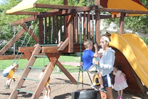
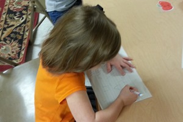

About Us
Honeygo Child Development Center is located in a residential neighborhood on two acres in Perry Hall, Maryland. On the site is the historic Jacob Seddon House, likely the oldest building in Perry Hall. Honeygo Child Development Center was founded in 1992 by Jim and Ramona Casserly. It began operation in 1994. It is the belief of Mr. & Mrs. Casserly that the best place for children to develop is in the home with a parent or grandparent. However, given the needs of modern life this is not always possible. Therefore, they have sought to provide the best possible alternative; a place where children are nurtured and feel safe that looks and feels like a family home. The Casserly’s are active owners thoroughly involved with the daily operation and are familiar with the children and their families so that they can support their individual need in a way that only a single center operation can do.
 